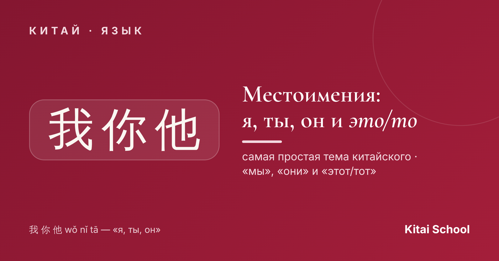
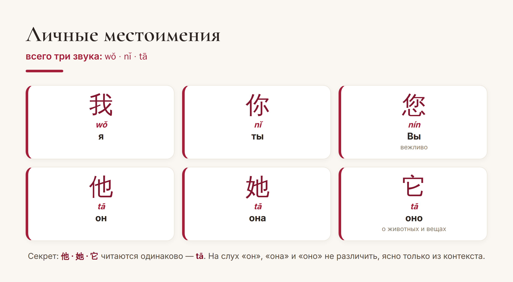
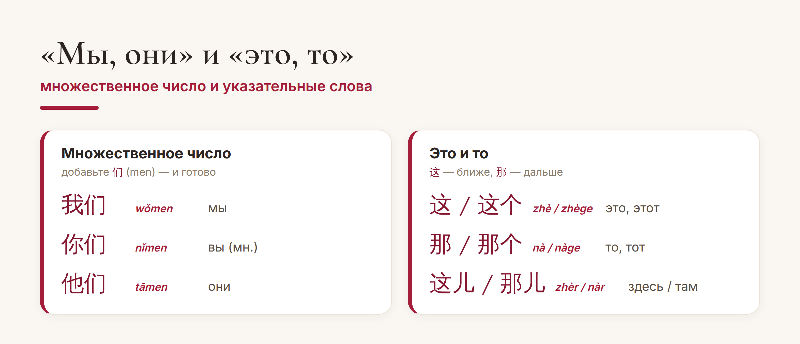

Китай · язык

Если китайский вас пугает — начните с местоимений. Это одна из самых лёгких и приятных тем: слов мало, они короткие, а множественное число делается одним движением. Уже через пять минут вы сможете сказать «я», «ты», «мы» и «это».
Разберём всё по порядку: личные местоимения, множественное число и указательные «это/то».
Базовые местоимения — это 我 (wǒ) «я», 你 (nǐ) «ты» и 他 (tā) «он». Три коротких слога, которые вы запомните сразу. Есть ещё вежливое 您 (nín) — «Вы», как уважительное обращение к старшим и незнакомым.

А теперь любимый «фокус» этой темы. «Он», «она» и «оно» пишутся разными иероглифами — 他, 她, 它 — но читаются абсолютно одинаково: tā. На слух их не различить, понять можно только из контекста. Иероглиф 她 («она») даже содержит ключ 女 — «женщина», а 它 используют для животных и предметов.
Вот где китайский особенно радует. Чтобы из «я» сделать «мы», не нужно ничего заучивать — достаточно добавить 们 (men): 我 → 我们 (wǒmen) «мы». И так со всеми:

Одно правило — и вы уже умеете говорить «мы» (我们), «вы» (你们) и «они» (他们). Никаких падежей и окончаний: местоимение не меняется, будь то «я вижу» или «видят меня».
Осталось научиться показывать на предметы. Здесь всего два слова: 这 (zhè) — «это, этот» (то, что ближе) и 那 (nà) — «то, тот» (что дальше). В речи к ним обычно добавляют счётное слово 个: 这个 (zhège) «этот», 那个 (nàge) «тот».
От них же образуются «здесь» и «там»: 这儿 (zhèr) — «здесь», 那儿 (nàr) — «там». Логика та же: 这 — рядом, 那 — подальше.
Лайфхак. Фраза 这个 (zhège) — палочка-выручалочка новичка. Не знаете, как называется предмет? Покажите на него и скажите 这个 — «вот это». В магазине и кафе работает безотказно.
Вот и вся тема: три местоимения, волшебное 们 для множественного числа и пара указательных слов. Никаких родов у самих слов, никаких падежей — местоимения в китайском действительно простые. Отличная тема, чтобы почувствовать первый успех в языке.
Лёгкого вам старта! 万事开头难。